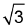
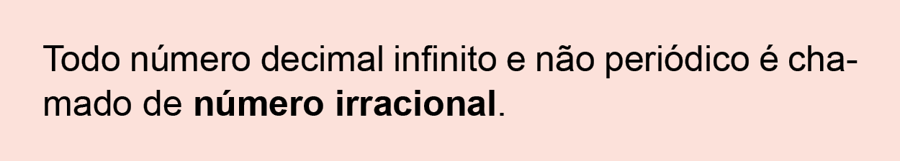

Unidade 1
Conjuntos, potências e radicais
10

M-Gucci / iStockphoto LP
Planeta Terra
11
Do microcosmo ao macrocosmo
Ao observarmos os fenômenos que ocorrem na natureza, veremos que temos números que
expressam medidas muito grandes, como a distância da Terra ao Sol,
1,5 ∙ 108 km, ou números muito pequenos, como a escala utilizada
pelos cientistas para manipular as células-
-tronco, representadas acima, usadas em pesquisas para o
tratamento de doenças, 10-5
m.
converse
1. No texto, está representada a distância da Terra ao Sol. Como se chama a notação utilizada para indicar essa distância? Explique.
2. O número que representa a escala utilizada pelos cientistas para manipular células-tronco é uma potência de base 10, cujo expoente é negativo. Como poderíamos representar esse número na forma de número decimal?
Capitulo 1
-Números irracionais
12
Mariana está curiosa para saber qual é o valor de .
- Troque ideias com um colega e expliquem como vocês poderiam fazer para calcular o valor de .

Para realizar operações matemáticas, podemos utilizar um valor aproximado de acordo com a nossa necessidade, veja:
Neste caso, como o algarismo na ordem dos centésimos é igual a 3, mantivemos o algarismo dos décimos.
Para obtermos um valor aproximado, podemos arredondar um número para uma determinada ordem, observando-se o primeiro algarismo que está à direita do algarismo da ordem escolhida:
- se for 0, 1, 2, 3 ou 4, mantém-se a ordem;
- se for 5, 6, 7, 8 ou 9, adiciona-se uma unidade ao algarismo.
Observe alguns exemplos de números irracionais e seus arredondamentos.
 = 2,236067977499... ≅ 2,24
= 2,236067977499... ≅ 2,24
- 1,90547234971349103... ≅ 1,91
- 0,1320087991762051... ≅ 0,13
- = 2,645751311064... ≅ 2,65
- π = 3,1415926535897932... ≅ 3,14
Número pi (π)
Vamos conhecer, agora, um número irracional muito importante: pi. Ele é representado pela letra minúscula π do alfabeto grego.
13
- Para começar, vamos realizar o experimento proposto a seguir, em dupla. Para isso, vocês irão precisar dos seguintes materiais:
Materiais
- 3 objetos cilíndricos
(tamanhos diferentes) - 1 pedaço de barbante
(tamanho suficiente para contornar cada um dos objetos) - 1 régua
- 1 calculadora
Procedimentos
1.º Construa, em seu caderno, a tabela abaixo. Anote nela o nome do objeto que será utilizado, a medida do comprimento da circunferência (C), a medida de seu diâmetro (d) e a razão entre a medida do comprimento e a medida do diâmetro.
|
Nome do objeto |
Medida do |
Medida do |
Razão entre a |
2.º Para coletar as medidas necessárias, contorne cada um dos objetos com o barbante. Em seguida, estique-o e meça com a régua o comprimento encontrado. Anote essas medidas na coluna “medida do comprimento da circunferência”.

3.º Utilizando a régua, meça o diâmetro da circunferência de cada um dos objetos e anote os valores na tabela.
14
4.º Com a calculadora, calcule a razão entre a medida do comprimento da circunferência e a de seu diâmetro. Arredonde os valores encontrados para um número inteiro. O valor encontrado é aproximado.
- Comparando os resultados encontrados, o que você observa?
Na realização do experimento, você deve ter encontrado  , ou
seja, utilizamos uma aproximação.
, ou
seja, utilizamos uma aproximação.
No século XVII, foi provado que quando realizamos o quociente  3, o
valor encontrado é um número decimal infinito e não periódico. Esse número é irracional e
representado pela letra grega π
(pi).
3, o
valor encontrado é um número decimal infinito e não periódico. Esse número é irracional e
representado pela letra grega π
(pi).
π = 3,1415926535897932...
Sendo C a medida do comprimento da circunferência e d a medida do seu diâmetro, temos que:
= π → C = π · d
Como d = 2r, então:

Os números irracionais são números decimais, infinitos e não-periódicos e não podem ser representados por meio de frações irredutíveis, por esse motivo encontramos apenas uma valor aproximado para pi.
Encontre soluções
- Identifique os números a seguir como racionais ou irracionais.

- 0,2525252525...
- 1,2674398702187...

- Discuta com um colega a situação a seguir e utilize uma calculadora para resolvê-la.
O conjunto roda/pneu tem medida 300/75-R22. O número 300 indica a largura (L), em mm, da banda de rodagem; o número 75 refere-se à porcentagem que a altura (H) do pneu representa da banda de rodagem; e o número 22 indica o diâmetro (d), em polegadas, da roda.
De acordo com as informações fornecidas, determine o número de voltas necessárias para que o conjunto roda/pneu percorra 6,28 km, sem derrapar. (Use 1 polegada = 0,025 m e π = 3,14).
- Em 2010, de acordo com o censo do IBGE, a cidade de Recife possuía 1 537 704 pessoas distribuídas em 218,44 km2. Com o auxílio de uma calculadora, determine a densidade demográfica aproximada dessa cidade.
15
- A medida do diâmetro de uma moeda de 1 real é igual a 27 mm. Calcule, em centímetros, a medida do comprimento da sua circunferência. (Considere π = 3,14).
- Uma pista de corrida tem forma circular e seu diâmetro mede 70 m. Um atleta corre, diariamente, o total de 5 km. Qual é o número mínimo aproximado de voltas que ele corre, todos os dias, nessa pista? (Use π = 3,14).
- Na figura abaixo, temos a representação da trajetória de dois atletas que caminham na mesma velocidade. Partindo do ponto A, eles passam juntos pelo ponto B e rumam por caminhos diferentes, com velocidades constantes, até chegar ao ponto C. Um deles segue a trajetória de uma semicircunferência de centro O e raio igual a 4 km. O outro percorre duas semicircunferências cujos centros são P e Q e a medida do raio é igual a 2 km. Qual dos dois atletas chegará antes ao ponto C?
![A figura contém uma linha reta na horizontal que tem o ponto A na extremidade da esquerda, e o ponto C na extremidade da direita. Entre esses pontos estão espalhados na linha, nessa sequência, os pontos B, P, O, Q. Do ponto A ao B a linha é contínua, do ponto B em diante, a linha passa a ser pontilhada. O ponto B é ligado ao ponto O por uma semicircunferência para cima. O ponto B é ligado ao ponto C por uma semicircunferência para baixo. O ponto O é ligado ao ponto C por uma semicircunferência para baixo. O ponto P se encontra no meio dos pontos B e O e o ponto Q, entre os pontos O e C.](../../resources/images/../../resources/images/9ANO_U1-web-resources/image/pg-24.png)
- A escola grega de Pitágoras estudou e observou muitas relações e modelos numéricos que apareciam na natureza, no corpo humano, na harmonia musical, na arquitetura, etc. Provavelmente, a mais importante relação é a razão áurea, razão divina ou proporção divina. A razão áurea pode ser observada na representação do homem feita por Leonardo da Vinci, em 1492 na obra Homem Vitruviano e também na construção da estrela pentagonal feita pelos pitagóricos.
Observe:
- Agora, utilizando uma régua, encontrem as medidas H, h, M e m. E anotem as medidas encontradas nas tabelas a seguir:
|
H (cm) |
h (cm) |
Razão H/h |
|
M (cm) |
m (cm) |
Razão M/m |
- Em seguida, com o auxílio de uma calculadora, calcule as razões entre H e h e entre M e m. Anote, na tabela, os
valores encontrados com aproximação de uma casa decimal.
- Comparando os valores encontrados, o que vocês observam?
- Como são chamados os números encontrados?

Acervo Galeria da Academia de Veneza
![Ilustração quadrada, em tons amarelados e envelhecidos, do Homem Vitruviano, de Leonardo da Vinci. Ele está em pé, de frente e nu. Os braços e as pernas do homem se duplicam, como se representassem movimento. Os braços estão abertos e esticados: dois estão erguidos um pouco acima da linha do ombro, e dois braços estão esticados seguindo a linha do ombro. As pernas do homem também estão esticadas, sendo duas dispostas paralelamente, seguindo a linha da cintura, e duas um pouco mais abertas. Ao redor do homem há um círculo e linhas verticais nomeadas por letras: a letra H maiúscula mede da extremidade dos pés paralelos até a altura da mão que está acima da linha do ombro. O ponto h minúsculo mede da extremidade dos pés paralelos até a altura do umbigo.](../../resources/images/../../resources/images/9ANO_U1-web-resources/image/MAT-8ano_U1_Homem_Vitruviano.jpg)
h
H